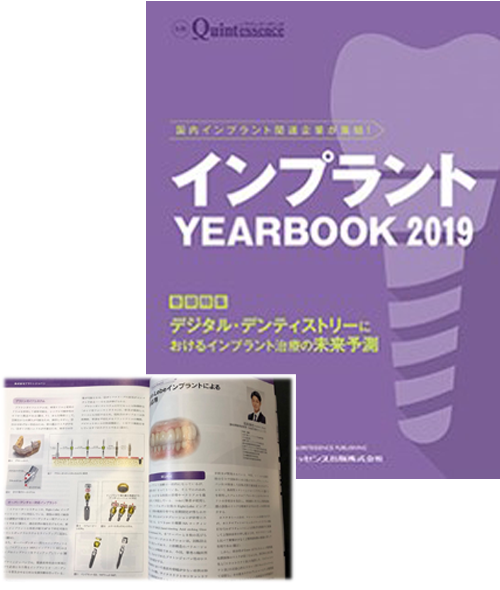

医療関係の方へ
～メディアや学会発表～
医療法人社団 翼会 MI総合歯科クリニックの理事長は、インプラント治療において講習会や学術発表で講師をつとめ、またメディアへの掲載も行うインプラント治療の経験と実績が豊富な歯科医師です。著書や学会発表予定などをご案内しますので、お気軽にお問い合わせください。
理事長 岩本 麻也
略歴
| 2007年3月 | 日本大学松戸歯学部卒業 |
|---|---|
| 2007年4月 | 日本大学松戸歯科病院臨床研修 |
| 2008年4月 | 都内一般歯科勤務 |
| 2008年4月 | 日本大学松戸歯学部口腔機能学講座研究生 |
| 2009年4月 | 水口インプラントセンター新宿初代医院長就任 |
| 2009年4月 | 日本インプラント臨床研究会認定会員、渉外担当委員長就任 |
| 2009年 | 日本口腔インプラント学会会員 |
| 2010年 | 日本歯科放射線学会優良医取得 |
| 2013年 | 歯科医師臨床研修医指導医取得 |
| 2013年 | 日本アンチエイジング歯科学会会員 |
| 2014年 | ICOI 認定医（International Congress of Oral Implantologists）取得 |
| 2014年 | ISOI認定医（International Society of Oral Implantology）取得 |
| 2015年7月 | MI総合歯科クリニック開院 |
| 2015年3月 | 日本口腔インプラント学会専門医取得 |
| 2017年 | 日本臨床歯周病学会会員 |
| 2018年5月 | 医療法人社団翼会設立 |
| 2018年4月 | 東北大学大学院歯学研究科口腔システム補綴学分野受講 |
講演でお伝えしたいこと
医療技術の進歩にともない、インプラント治療においてもさまざまな技術や設備、システムが開発されています。とくにデジタルテクノロジーの進化はめざましいものがあります。たしかに優れている部分もありますが、必ずしも従来の手法が劣るとはかぎりません。大切なのは、従来の方法とのかけ合わせです。デジタルテクノロジーと従来法を使い分けると融合について多くの医療関係者に認識していただきたいと考えています。
講演情報
PICKUPメディアに掲載されています
-
インプラントジャーナル
-

インプラントイヤーブック2019
著者・編集： クインテッセンス出版
学術報告ご紹介
これまでのさまざまな学術報告をご紹介します。詳しくはそれぞれの報告をクリックしてみてください。